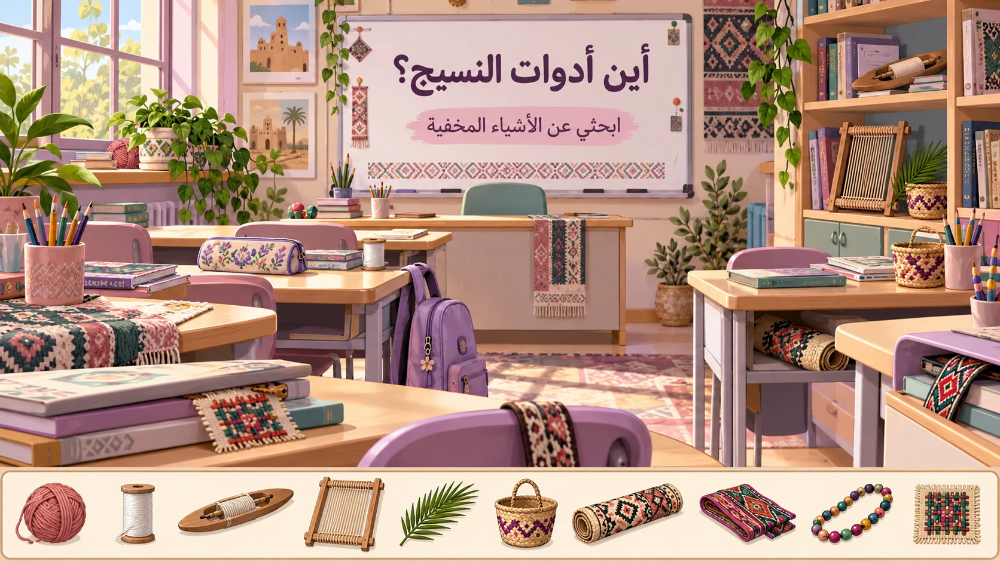

النسيج الشعبي أصالة وجمال
ابحثي عن الأشياء داخل الفصل واضغطي عليها.لكل غرض سؤال و٣٠ ثانية للإجابة، وكل إجابة صحيحة تمنحك نقطة.
الصور أسفل الفصل دليل للأشياء المطلوبة.
اكتملت رحلة البحث
أديري الجهاز بالعرض لتظهر اللعبة أكبر ↔